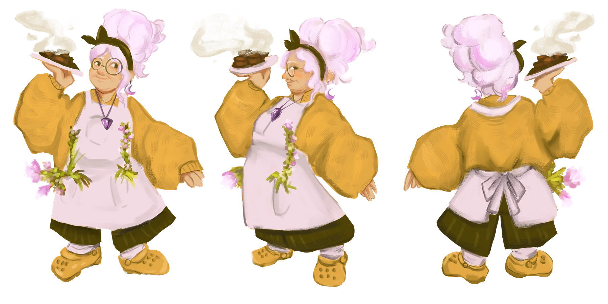
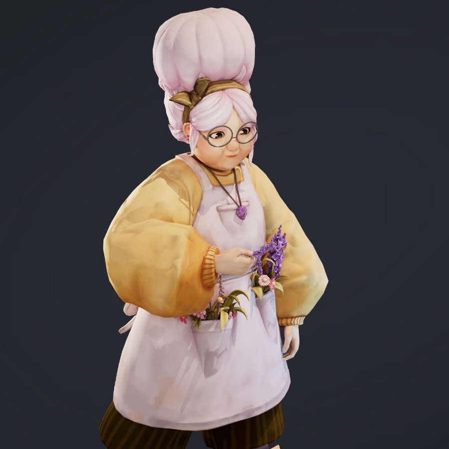

the ineffable granma gem!
our tutorial npc and the first of the characters to come to life
Sweet, spacey, ex-hippie who bakes "special" sweets and has a secret wild past
I was envisioning a miss frizzle type who grew up with a penchant for gardening (and gardening iykyk), holding onto her helpful nature through it all (though she's definitely Been Through It).
gem is our mentor character, and her hobbies include gardening, knitting, chatting up anyone who passes into her line of sight, and hanging out on her front porch, you can check out her pinterest board to get a better idea of some of the visuals we had in mind


this has been such a great experience and we can't wait to see granma gem come to life in our game! we'll be sharing more characters as their designs are finalized, and we hope you're as excited to see the progress as we are :)